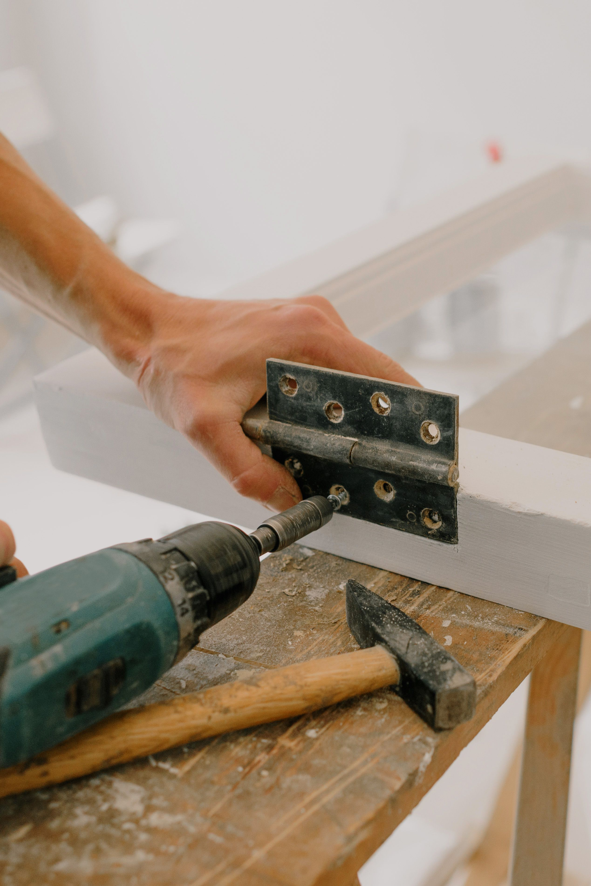
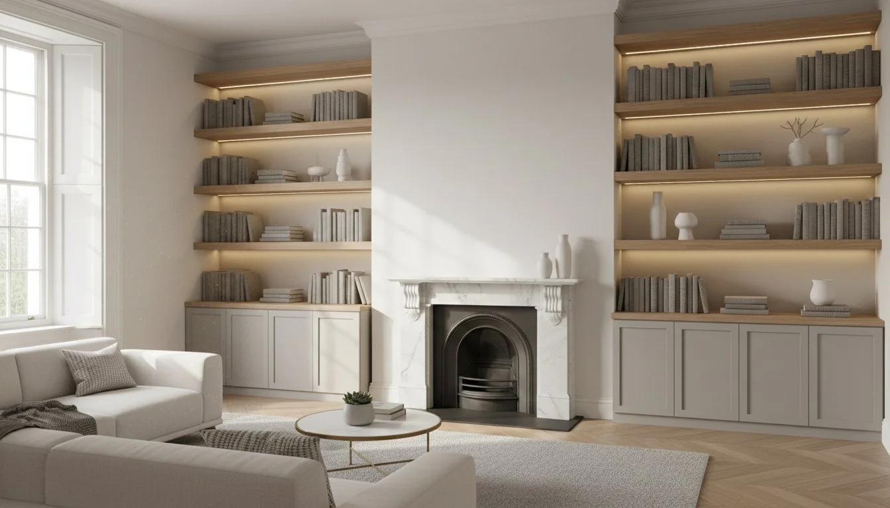
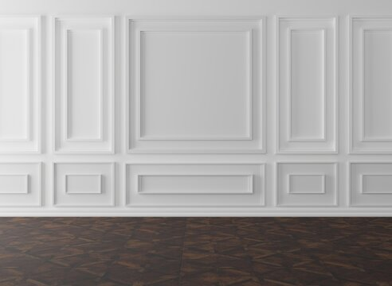
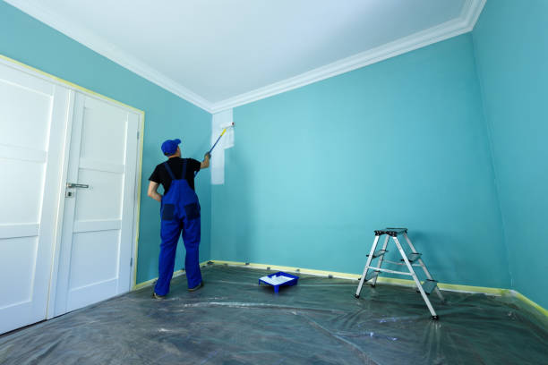
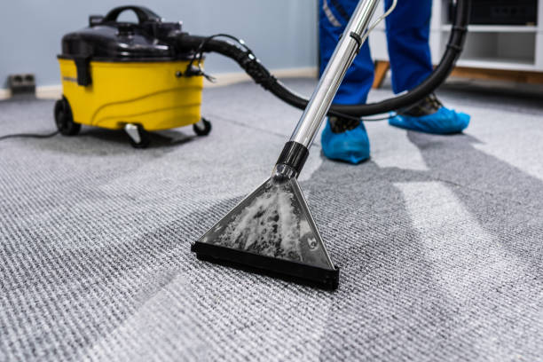
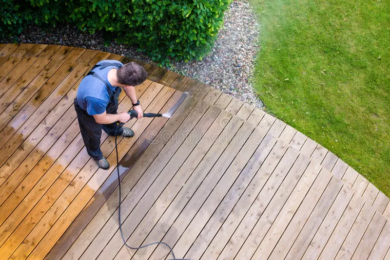

Home / Handymen & Maintenance
Handymen & Maintenance
Your local Bournemouth handymen for home improvements, repairs and upkeep across the south of England. Our team of experienced handymen can take on any job, no matter how big or small — from a quick fix to a full to-do list.

General Repairs & Jobs
Everyday handyman repairs and jobs to keep your home working as it should. Our handymen handle everything from single odd jobs to a full day's list.
- General repairs & fixesAll those odd jobs around the house, sorted in one visit.
- Replacing tapsOld, dripping or worn taps replaced quickly and neatly.
- Building flat pack furnitureWardrobes, beds, desks and more, assembled and secured.
- Non-structural crack repairsCracks filled and smoothed, ready for decorating.
- Replacing external door locksExternal door locks replaced to keep your home secure.
- Hanging doorsDoors hung properly so they open and close smoothly.
- Handles & internal door locksNew handles and internal door locks fitted.
- Hanging mirrors, shelves & TVsMirrors, shelves and TVs mounted securely and level.


Carpentry & Shelving
Carpentry and storage solutions built around your home.
- Bespoke shelvingMade-to-measure shelving designed around your space.
- Bespoke panellingMade-to-measure wall panelling designed and fitted to suit your room.
- Building flat pack furnitureWardrobes, beds, desks and more, assembled and secured.
- PlasterboardingPlasterboard fitted ready for skimming or decorating.
- Building stud wallsStud walls built to divide or reshape your rooms.

Painting & Decorating
A clean, professional finish inside and out.
- DecoratingFull room decorating with careful preparation throughout.
- PaintingWalls, ceilings, woodwork and doors painted to a lasting finish.
- PanellingWall panelling fitted neatly and finished to a high standard.
- Exterior paintingOutside woodwork, render and masonry painted and protected.

Tiling & Installation Clearance
Getting rooms ready and finished around your new installations.
- Bathroom tilingWall and floor tiling for a clean, watertight bathroom finish.
- Bathroom & kitchen clearanceRooms cleared and stripped out, ready for your new installation.
Windows
Window replacements to keep your home warm, secure and looking its best.
- Window replacementsOld or damaged windows replaced with a neat, secure fit.


Interior & External Cleaning
Deep cleaning and jet washing inside and out to freshen up your home.
- Carpet cleaningCarpets deep cleaned to lift dirt, stains and odours.
- Sofa cleaningUpholstery and sofas cleaned and refreshed.
- Driveway, garden & patio jet washingDriveways, patios and garden surfaces jet washed back to their best.

Garden Maintenance
Regular upkeep to keep your garden tidy and under control.
- Hedge trimmingHedges trimmed and shaped, with cuttings cleared away.
- Grass cuttingLawns cut and edged for a neat finish.
- WeedingBeds, borders and paths weeded and tidied.
- Small scale landscapingSmall landscaping jobs to improve and refresh your garden.
Handyman services near you
Based in Bournemouth, our team of handymen covers Dorset, Hampshire and everywhere within a two-hour radius across the south of England. No job is too big or too small — whether it's a single repair or a full list of home improvements, our handymen are ready to help.
Need a handyman in Bournemouth or the south?
Whatever the job, big or small, get a free, no-obligation quote from our team of handymen today.
Request a free quote